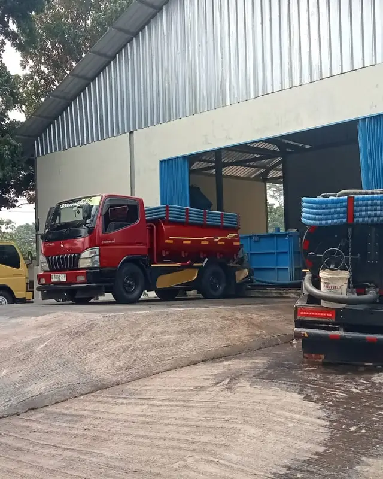
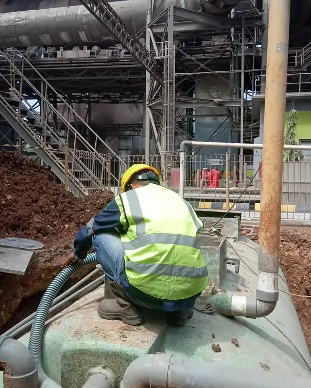
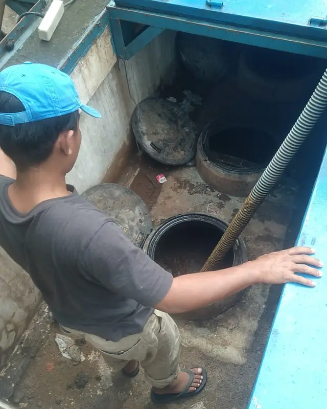
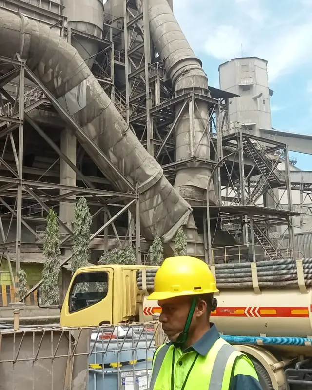
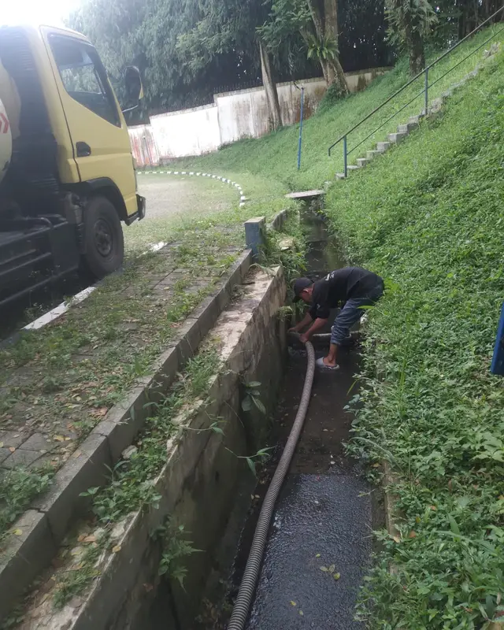
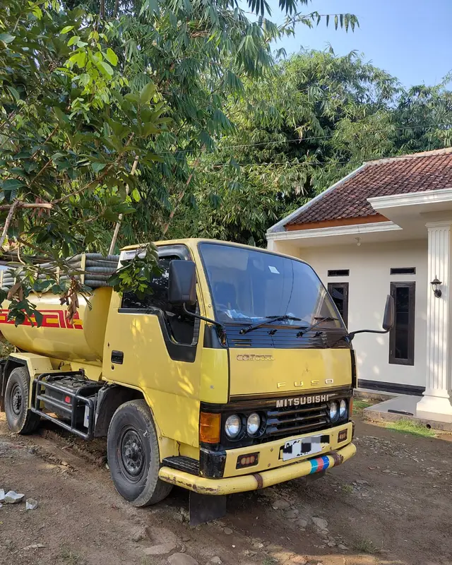

Rumah, kos, ruko, kantor, restoran
Butuh sedot WC atau septic tank?Tenang, ini bisa beres.
Tidak perlu malu, ini masalah yang kami tangani setiap hari. Pilih kondisi Anda, isi nama dan nomor WhatsApp, lalu kami hubungi. Biaya kami infokan sebelum teknisi berangkat.
1Apa masalahnya?
2Di mana lokasinya?
Tinggalkan nomor Anda
Untuk: sedot WC rutin
Biaya jelas diinfokan lewat WhatsApp sebelum berangkat
Tanpa kejutan kondisi lapangan dikabari dulu sebelum tindakan tambahan
Akses sempit peralatan disesuaikan dengan lokasi
Armada dan pekerjaan asli kami






Takut apa saat memanggil tukang sedot?
"Nanti harganya naik di lokasi."
Estimasi kami kirim lewat WhatsApp dulu. Kalau ada kondisi yang memengaruhi biaya, teknisi memberi tahu sebelum menambah tindakan.
"Ribet, harus isi data banyak."
Hanya nama, nomor WhatsApp, dan lokasi yang wajib diisi, kurang dari 1 menit. Kami yang menghubungi dan mengatur jadwal serta teknisi.
"Akses rumah atau kos sempit."
Ceritakan aksesnya saat chat, supaya teknisi tahu apa yang harus dibawa.
"Tempat saya jadi kotor."
Setelah penyedotan, lokasi dibersihkan kembali.
Prosesnya 4 langkah
- Isi formPilih kondisi, lokasi, dan nomor WA.
- Kami hubungiTerima estimasi biaya dan jadwal.
- Teknisi datangPengerjaan umumnya 30–60 menit.
- BersihLokasi dirapikan kembali.
Pertanyaan umum
Berapa harga sedot WC?
Tergantung lokasi, akses kendaraan, dan volume. Selalu dikonfirmasi lewat WhatsApp sebelum teknisi berangkat.
Area mana yang dilayani?
Jakarta Selatan, Depok, Bogor, dan Tangerang Selatan (termasuk Pondok Aren). Di luar itu belum bisa dijadwalkan.
Jam operasional?
Setiap hari pukul 07.00 sampai 21.00 WIB.
Jangan tunggu sampai meluap.
Chat sebentar untuk tahu estimasi biaya dan jadwal.
Chat WhatsApp Sekarang